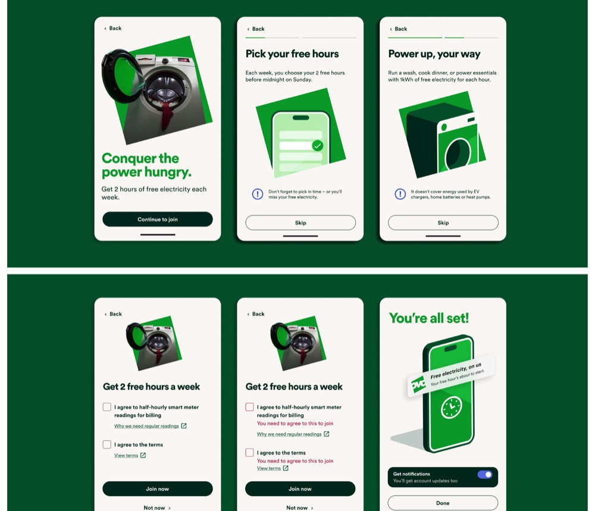
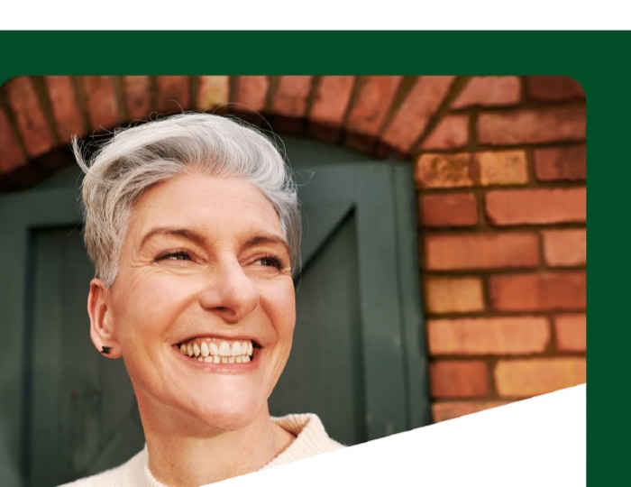
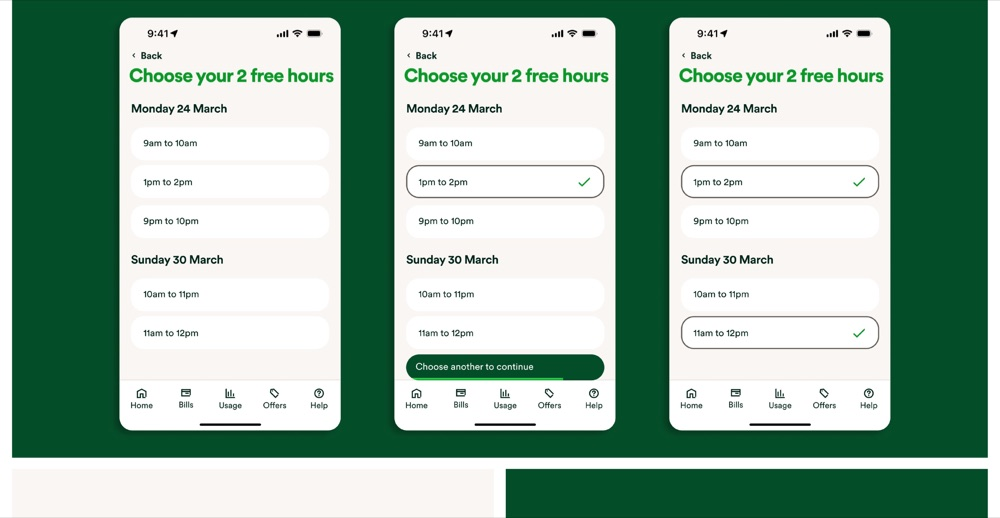

Project
Free electricity campaign
Bringing two hours of free power to life in the OVO app.
I led the UX copy across the end-to-end flow — from the sign-up journey and setup states to the dashboard and the plain-English explainer that finally made 1kWh make sense.
See project →